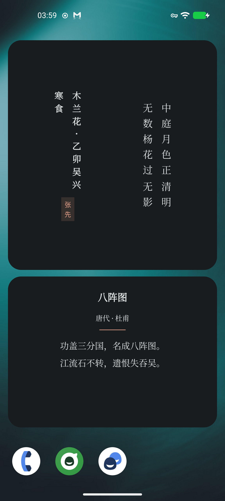

02 / IMMERSIVE READING
让正文成为
屏幕的中心。
题目、作者、朝代与正文先出现，工具默认退后。轻触屏幕后，诗外解读、系统诵读、个人录音与收藏才来到手边。
- 01长按诗句，保存为摘句或制作诗签图片
- 02注释、译文、赏析与创作背景集中在“诗外”
- 03系统 TTS 诵读与个人朗诵录音彼此独立
- 04短诗舒展成页，长诗按章节连续阅读

原来姹紫嫣红开遍，
似这般都付与断井颓垣。
似这般都付与断井颓垣。

不做无尽信息流，也不把阅读变成连续签到。每天有起点，也有终点。
先从想念、清欢、独处、远行、困顿、释然与随缘中选择今日心境，再上滑展卷。三次阅读结束后，留下“今日三遇”，当天仍可逐首回看。
题目、作者、朝代与正文先出现，工具默认退后。轻触屏幕后，诗外解读、系统诵读、个人录音与收藏才来到手边。
心境不是标签，也不会制造画像。它只在本地帮助当天的三次偶遇更贴近此刻；选择“随缘”，则保留完全未知的相逢。
每日从题材、诗人、朝代与词牌各开一卷；也可以从诗人、标题或正文开始搜索，在人物档案、作品集与诗词之间自由往返。
 01 / 每日四卷
01 / 每日四卷 02 / 今日开卷
02 / 今日开卷 03 / 寻卷搜索
03 / 寻卷搜索 04 / 沿诗抵达诗人
04 / 沿诗抵达诗人收藏不只有整首诗。摘句会记住出处、保存时间与当天心境，轻触便能回到原诗；每一句也可以制作成诗签分享。

按日期收好，支持搜索；移除收藏后仍可撤销。

试听确认后保存；重录与删除均有明确确认。
见诗不包含网络权限，不要求注册或登录。诗词、诗人、标签与词牌数据首次导入后，可以离线阅读和检索。
没有登录、推荐账户、云同步或在线备份。
收藏、摘句、心境、三遇进度、显示偏好与录音均本地保存。
唯一的敏感权限，仅在你主动录制个人朗诵时申请。
整首诗与摘句可以生成带应用署名的图片卡片。
功能文字清晰易读，诗词统一使用朱雀仿宋。显示选择只保留真正影响阅读的部分。

浅色、深色或跟随系统；深墨灰与暖白避免纯黑带来的强烈反差。

简体中文、中国香港繁体与中国台湾繁体，均在本地完成转换。

不同尺寸呈现不同信息密度，轻触可直达当天诗词详情。
见诗 Android 版 · 基于 SuFei 开源项目持续改进
诗词数据与第三方字体来源详见仓库许可说明。